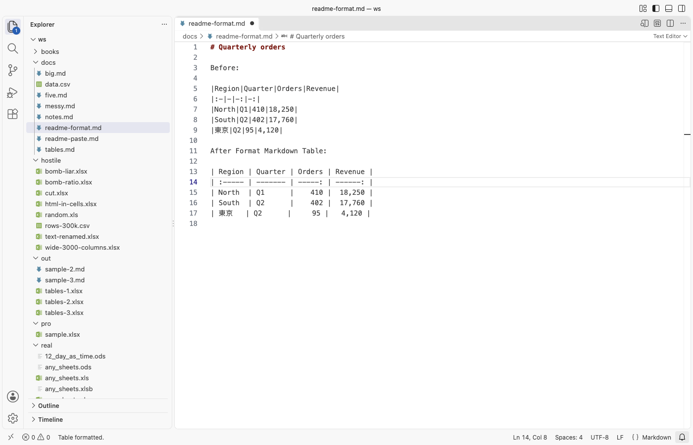

Open files in VS Code and Cursor / Docs and diagrams
Line up the columns of a Markdown table in VS Code
A Markdown table renders the same when its pipes do not line up, but in the editor it is hard to read and to edit. Excel to Markdown (Paste & CSV) has a free command, Format Markdown Table, that pads the cells of the table under the cursor with spaces so every pipe lines up. It keeps the colons of the alignment row, counts Chinese, Japanese and Korean characters and emoji as two columns, and leaves the cell text as it is. Zovo Pro (USD 19 once) adds Convert Workbooks to Markdown Files, which writes every sheet of a workbook as an aligned table, with 3 free tries.
Free, MIT license. Extension ID zovo.zovo-excel-to-markdown, version 0.1.2. Needs VS Code 1.90.0 or newer.

Steps in VS Code
- Install Excel to Markdown (Paste & CSV) from the Marketplace, or press Ctrl+P (Cmd+P on macOS) and run
ext install zovo.zovo-excel-to-markdown. - Open the Markdown file and click anywhere inside the table, or select its lines. The table needs a header row with the row of dashes right under it.
- Right-click and pick Format Markdown Table, or press Ctrl+Shift+P (Cmd+Shift+P on macOS) and run "Excel to Markdown: Format Markdown Table".
- The table is rewritten in place, with padded cells, a pipe at both ends of each line and a row of dashes as wide as each column. The status bar says Table formatted. Press Ctrl+Z (Cmd+Z on macOS) to undo.
- Check the alignment. Colons in the row of dashes are kept. If that row has no colons, columns that hold only numbers get right alignment. Set
excelToMarkdown.alignmenttononeto leave them without alignment. - A cell longer than 40 characters is not padded, so one long cell does not stretch the whole column. Set
excelToMarkdown.maxColumnWidthto0to pad every cell, or turn onexcelToMarkdown.compactfor one space around each cell and no padding.
Where Zovo Pro saves time
Format Markdown Table is free, with no limit, no sign-in and no network calls. So are Paste as Markdown Table, Convert CSV/TSV to Markdown Table, Convert Markdown Table to CSV or TSV and the spreadsheet preview. The right-click entry shows in Markdown files, and the Command Palette entry works in any text file.
When the tables come from a workbook with many sheets, pasting and formatting them one by one takes time. Convert Workbooks to Markdown Files writes one .md file next to each workbook, with a heading for the file, a heading for each sheet and an aligned table under it. Empty sheets are left out. It also takes a whole folder, up to 1,000 workbooks. The other Pro tools are Save Markdown Tables as an Excel File, which puts every table of a Markdown document in one .xlsx file, and Keep Excel Formats, Links and Merged Cells, which shows cells in the preview as Excel shows them.
With Convert Workbooks to Markdown Files (Zovo Pro)
- Right-click a workbook or a folder in the Explorer and pick "Zovo Pro: Convert Workbooks to Markdown Files".
- If some of the .md files exist already, choose Replace them or Skip them. Cancel in the progress message stops the run.
- A message says how many files and sheets were written. A try counts only when at least one file was written.
Convert Workbooks to Markdown Files works 3 times on your computer before it asks for a license, and a try counts only when you get a result. Opening a file shows no popup and no countdown.
Zovo Pro costs USD 19 once. It is not a subscription, and it turns on the Pro tools in every Zovo extension, not only Excel to Markdown (Paste & CSV). After a card payment (Stripe) your license key shows on the next page. In VS Code, run "Zovo Pro: Enter Zovo Pro license key" from the Command Palette and paste it. The key is checked on your computer, with no network call. With GitHub Sponsors, pick the "$19 one time" tier, then run "Zovo Pro: I already paid: unlock with GitHub Sponsors" and sign in with the same GitHub account. With PayPal, send USD 19 with "Zovo Pro" in the note and the key comes by email within a day.
A team of 5: USD 59 once, by card or by PayPal. Every rule and every Pro tool is on the Zovo Pro page.
Steps in Cursor, Windsurf or VSCodium
- Open the Extensions view with Ctrl+Shift+X (Cmd+Shift+X on macOS).
- Search for
zovo.zovo-excel-to-markdownand click Install. Cursor, Windsurf and VSCodium install from Open VSX, where it is published aszovo/zovo-excel-to-markdown. - If your editor has no gallery, download the .vsix from the Open VSX page and run "Extensions: Install from VSIX...".
- Then use it the same way as in VS Code.
What Excel to Markdown (Paste & CSV) handles
- Tables with or without a pipe at the start and end of each line.
- Escaped pipes (
\|), which stay inside their cell. - Rows with fewer cells than the header, which get empty cells. A row with more cells adds a column with an empty header.
- Chinese, Japanese and Korean text and emoji, which take two columns each in the editor.
- Tables from anywhere, typed by hand, pasted or written by another tool.
What it does not do
- One table per run. Format Document does not use this command, and nothing is formatted on save.
- The row of dashes must be the second line of the table. A table inside a block quote, with lines that start with
>, is not found. - With the default
excelToMarkdown.maxColumnWidthof 40, the pipes after a longer cell do not line up in that row. - With only the cursor in the table, the command looks up to 20,000 lines above and below it. Select a longer table before you run it.
Other options
- Markdown All in One. A free Markdown extension for VS Code. Its table formatter lines up every table of the file when you run Format Document.
- Prettier. A free code formatter that also formats Markdown, tables included. It formats the whole file, not one table.
- Markdown Table Prettifier. A free VS Code extension that formats Markdown tables, also through Format Document.
Install counts and Open VSX status were checked on 13 November 2026. Descriptions in quotes are the extensions' own.
Questions
Does formatting change how the table looks when rendered?
The padding does not show in the rendered table. Only the alignment can change. If the row of dashes had no colons, number columns now get right alignment. Set excelToMarkdown.alignment to none to avoid that.
Can I format every table in a file at once?
No. Run the command once for each table. To format all tables in one step, use Format Document with a formatter such as Prettier.
Does it change the text in my cells?
No. It only adds or removes spaces around the cells and fills short rows with empty cells.
Does it work in Cursor or Windsurf?
Yes. Cursor, Windsurf and VSCodium install extensions from Open VSX. Search for the extension in their Extensions view and install it there.
More about Excel to Markdown (Paste & CSV)
Read the Excel to Markdown (Paste & CSV) page for every feature and setting, or the source code on GitHub.
Related guides
- Turn Excel cells, a sheet or a CSV file into a Markdown table in VS Code
- Convert a Markdown table back to CSV or Excel
- Preview a reStructuredText (.rst) file in VS Code
- Read an RTF file in VS Code
Zovo Pro and support
Zovo Pro: USD 19 once, every Zovo viewer. It turns on the Pro tools in this extension and in the other Zovo extensions you use. The free features stay free.
After a card payment your license key shows on the next page. Paste it with the command "Zovo Pro: Enter a key".
You can also support the work with no Pro:
Need your format supported?
Open a format request with a sample file, and I reply there whether it can be done. For USD 299 once, through this GitHub Sponsors tier, I add your file format or a missing feature to this extension, with tests, within 7 days.